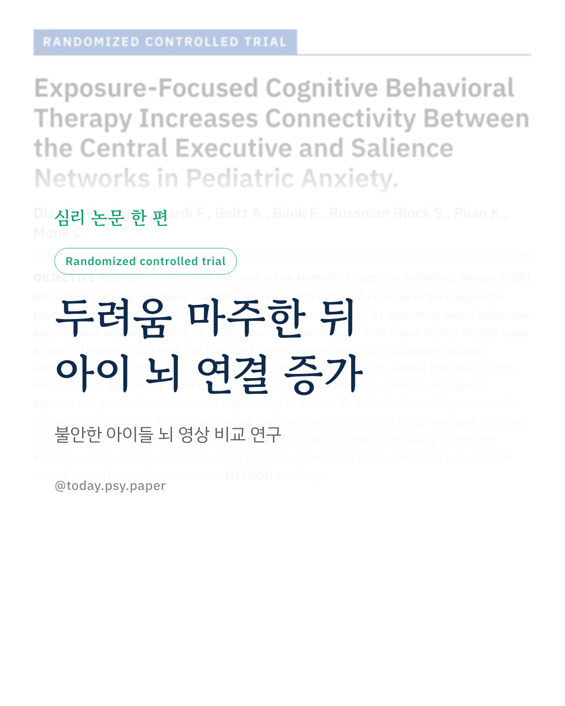
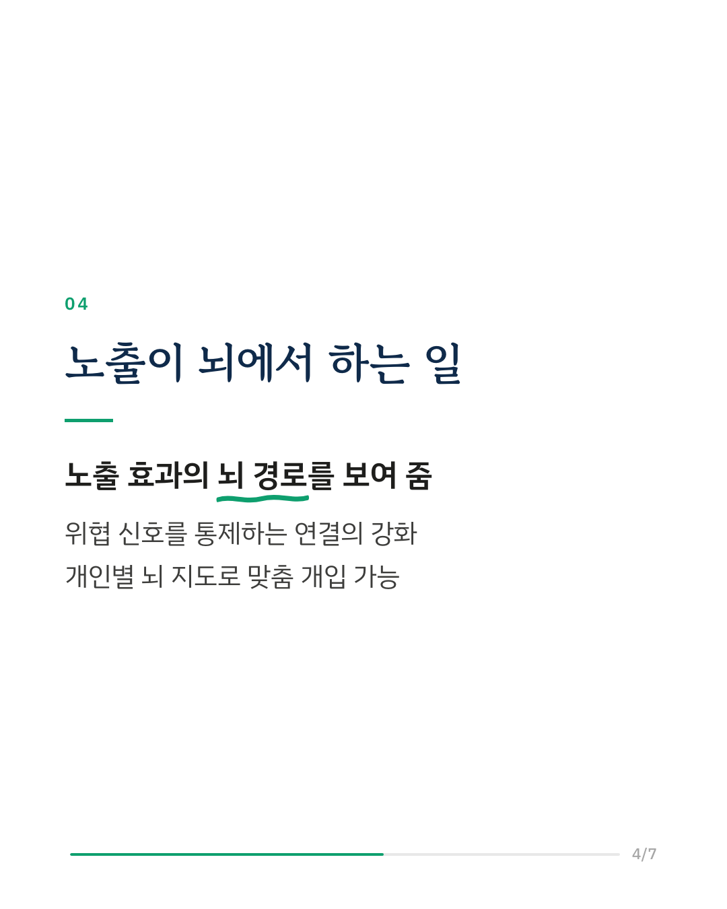
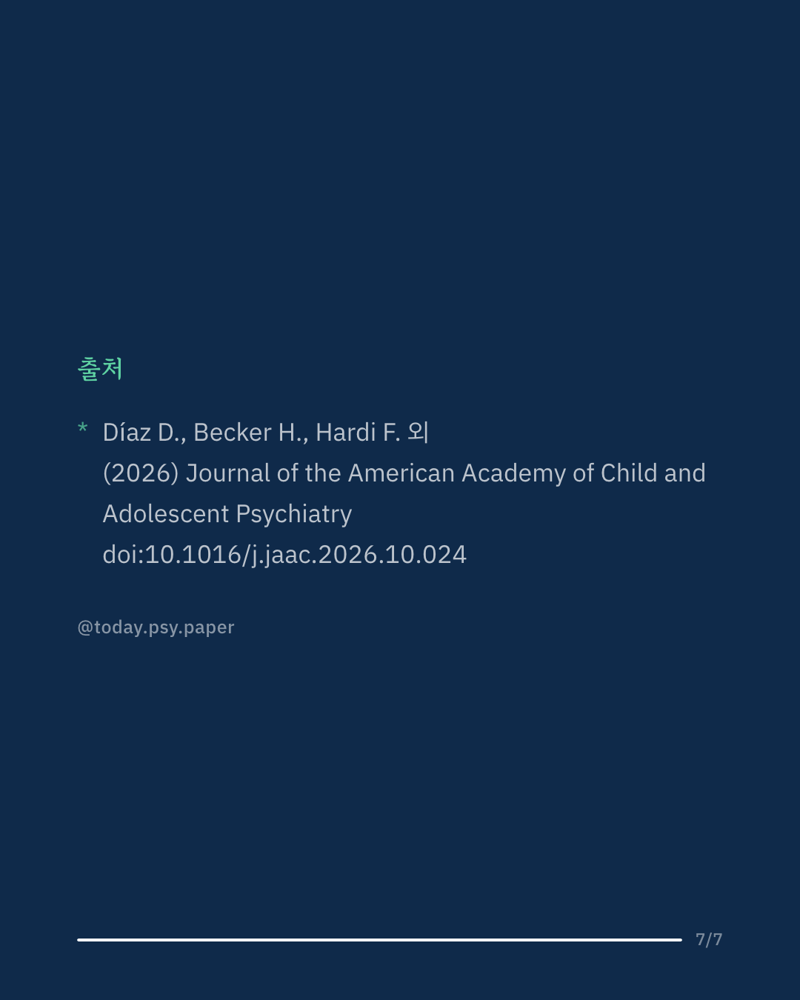

아동·청소년 불안장애 인지행동치료에서 가장 효과적인 요소는 두려운 상황을 직접 마주하는 '노출'입니다. 하지만 노출은 아이들이 가장 견디기 힘들어하는 단계이고, 상당수는 치료 뒤에도 충분히 나아지지 않습니다. 연구진은 노출이 뇌의 인지 조절 연결망을 어떻게 바꾸는지 알아보기 위해 7~18세 불안장애 아동·청소년 100명을 노출 중심 인지행동치료와 이완 훈련에 무작위로 배정하고, 불안이 낮은 아이 35명과 함께 치료 전후 쉬는 상태의 뇌 영상을 찍었습니다. 연결 구조는 집단 평균이 아니라 한 명씩 따로 그리는 방식으로 분석했습니다. 치료 전에는 불안한 아이들이 불안이 낮은 아이들보다 주의 통제망 안쪽 연결과 통제망과 기본상태망 사이 연결이 적었습니다. 치료 뒤 변화는 두 훈련이 서로 달랐습니다. 노출 중심 치료는 주의 통제망과 위협 감지망 사이의 연결만 늘렸고, 이완 훈련은 통제망 안쪽 연결을 늘렸습니다. 연구진은 이 결과가 노출이 위협 신호를 위에서 통제하는 연결을 강화한다는 설명과 맞는다고 해석했습니다. 또 한 명씩 그린 뇌 연결 지도가 치료를 맞춤화할 표적을 찾는 데 쓰일 수 있다고 말합니다. 다만 이번 분석은 쉬는 상태의 뇌만 찍었고, 연결 변화가 증상 호전과 이어지는지는 다루지 않았습니다. Journal of the American Academy of Child and Adolescent Psychiatry (2026), 'Exposure-Focused Cognitive Behavioral Therapy Increases Connectivity Between the Central Executive and Salience Networks in Pediatric Anxiety' DOI: 10.1016/j.jaac.2026.10.024 #임상심리 #정신건강정보 #심리학연구 #논문리뷰 #불안장애 #인지행동치료 #아동청소년 #뇌과학
python3 publish.py 42988353